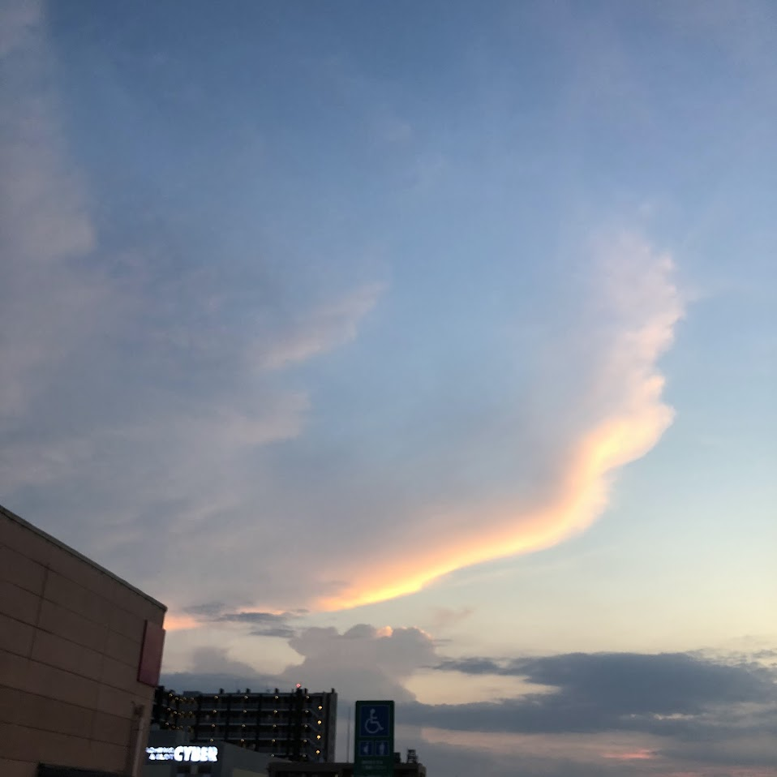

第三回「大気と海洋」

大気の鉛直構造
- 対流圏
- 0~11 km (熱帯では0~15) km
- 気温減率：6.5℃/kmで気温減少
- 成層圏
- 11~50 km(気温増加)
- オゾン層が存在する
- 中間圏
- 50~80 km(気温減少)
- 熱圏
- 80~500 km(気温増加)
太陽放射と熱平衡
- 太陽放射：太陽から届くエネルギー全体のこと(光、熱など)
- 地球放射：地球から放射されるエネルギー（赤外線）
- 熱平衡：太陽放射と地球放射が平衡する状態
- 温室効果：大気が地球放射を吸収し太陽放射を透過することにより地表をあたためる
飽和水蒸気量と相対湿度
- 水蒸気量：空気中(一定体積)に含まれる水蒸気の量
- 水蒸気圧：空気中(一定体積)の水蒸気の圧力
- 飽和：ある温度で水蒸気量が最大になる状態
- 露点温度：飽和水蒸気量になる温度
- 飽和水蒸気量：一定温度で空気中に含まれる水蒸気の量
- 飽和水蒸気圧：飽和水蒸気量に対応する水蒸気圧
- 相対湿度：飽和水蒸気量に対する水蒸気量の割合
- $相対湿度 = \frac{水蒸気圧}{飽和水蒸気圧} \times 100 = \frac{水蒸気量}{飽和水蒸気量} \times 100$
気圧
- 気圧：大気が地表に及ぼす圧力
- トリチェリーの実験
- 水銀柱の高さが等しいことがわかる
- 標準大気圧：0℃で海面上における気圧
- $1 atm = 1013 hpa$
風の性質
- 風：大気の水平方向の移動
- 風の要素
- 風向：風が吹く方向、吹いてくる向きになることに注意！
- ex) 風向が東：東から西に向かって吹く風
- 風速：風の速さ
- 風の大原則(気圧傾度力)：風は高気圧から低気圧へ吹く
海陸風(熱対流)
- 熱対流：地表の温度差によって生じる上層と下層の循環
海陸風：昼間に海から陸に吹く風、夜間に陸から海に吹く風
- 昼間：陸が海よりも暖かくなり陸風
- 夜間：陸が海よりも冷えて海風
覚え方：陸はウワキモノ：陸は温めやすく冷めやすい
大気の循環
- 高緯度低圧帯(60度付近)
- フェレル循環
- 中緯度高圧帯(30度付近)
- ハドレー循環
低緯度低圧帯(0度付近)
偏西風(ジェット):中緯度高圧帯から高緯度低圧帯に向かって吹く西風
日本の気象配置
- 春：春一番（一番最初の強い南風）
- 梅雨：梅雨前線
- 夏：南高北低型(南に高気圧、北に低気圧)
- 秋：秋雨前線
- 冬型の気圧配置：西高東低（西に高気圧、東に低気圧）
海水の組成
- 海水：水と塩化ナトリウムや塩化マグネシウムなどの塩類が溶け込んだ水
- パーミル(1kgあたりの塩分量g)：海水の塩分濃度の単位
海洋の鉛直構造
- 表層混合層：海面の水温がほとんど変わらない層
- 温度躍層：水温が急激に下がっていく層
- 深層：水温が一定の層
- 中層水
- 深層水
- 底層水
海流
- 海流：海洋の水の表層での流れ
- 亜熱帯還流:南北太平洋や大西洋で流れる還流
- 西岸強化:亜熱帯還流の西側では幅が狭くなり速くなる
エルニーニョ現象、ラニーニャ現象
- エルニーニョ現象：南米沿岸の海水温が上昇し、気象変動が起こる現象、日本では冷夏や暖かい冬になる
- ラニーニャ現象：エルニーニョ現象の逆で南米沿岸の海水温が下がる現象、日本では熱い夏や寒い冬になる